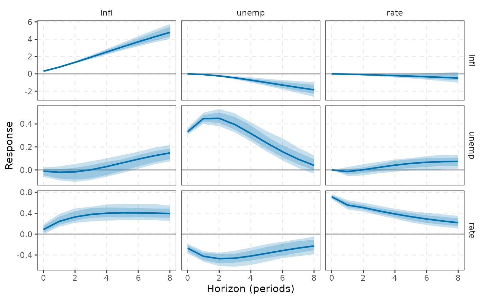

Impulse responses, variance decompositions, historical decompositions, forecasts
Source:R/bvar.R, R/dynamics.R
dynamics.RdImpulse responses, variance decompositions, historical decompositions, forecasts
Usage
# S3 method for class 'bvarm'
irf(object, ..., vol = c("last", "mean"))
# S3 method for class 'bvarm'
fevd(object, ..., vol = c("last", "mean"))
# S3 method for class 'bvarm'
forecast(object, h = 8L, exog_future = NULL, level = c(0.68, 0.9), ...)
# S3 method for class 'bvarm'
hd(object, id = id_chol(), ndraw = 100L, ...)
irf(object, ...)
fevd(object, ...)
hd(object, ...)
forecast(object, ...)
# S3 method for class 'varm_draws'
irf(
object,
id = id_chol(),
horizon = 20L,
level = c(0.68, 0.9),
normalise = NULL,
cumulative = NULL,
...,
.fevd = FALSE
)
# S3 method for class 'varm_draws'
fevd(object, id = id_chol(), horizon = 20L, level = c(0.68, 0.9), ...)
# S3 method for class 'varm'
irf(
object,
id = id_chol(),
horizon = 20L,
ci = c("bootstrap", "wild", "wild_mammen", "mc", "none"),
nboot = 1000L,
level = c(0.68, 0.9),
bias_correct = FALSE,
normalise = NULL,
cumulative = NULL,
...,
.fevd = FALSE
)
# S3 method for class 'varm'
fevd(object, id = id_chol(), horizon = 20L, ...)
# S3 method for class 'varm'
hd(object, id = id_chol(), ...)
# S3 method for class 'varm'
forecast(
object,
h = 8L,
exog_future = NULL,
ci = c("mc", "bootstrap", "wild", "none"),
nboot = 1000L,
level = c(0.68, 0.9),
...
)Arguments
- object
a
varm,bvarmorvarm_drawsobject.- ...
passed to methods.
- vol
for
bvarmfits with stochastic volatility: use the"last"(final-period) or"mean"innovation covariance.- h
forecast horizon (steps).
- exog_future
h x qmatrix of future exogenous regressors (ifexogwas used).- level
credible/confidence levels (e.g.
c(0.68, 0.90)); bands are equal-tailed percentiles.- id
identification scheme, see identification.
- ndraw
number of posterior draws used for the historical decomposition (median reported).
- horizon
maximum horizon (impact is horizon 0).
- normalise
optional
normalise_to()specification (the olderlist(shock =, variable =, size =)still works): rescale each shock so that the impact response ofvariableequalssize(e.g. a 100bp policy-rate shock).- cumulative
<
tidy-select> variables whose responses are cumulated over the horizon (use for variables entered in differences), e.g.cumulative = c(infl, unemp).- .fevd
internal; compute the variance decomposition instead of the IRF.
- ci
for
varm:"bootstrap","wild","wild_mammen","mc"or"none".- nboot
number of bootstrap / Monte Carlo draws.
- bias_correct
Kilian bias correction (bootstrap only).
Value
varm_irf / varm_fevd objects with $estimate ([K, K, H+1], response x shock x horizon;
median across draws when draws exist) and $bands ([K, K, H+1, 2*length(level)]).
Use tidy() for a tibble and autoplot() for a plot.
See also
Other dynamics:
normalise_to()
Examples
fit <- varm(yraw, p = 2)
r <- irf(fit, horizon = 8, ci = "mc", nboot = 100, cumulative = infl)
r
#> <varm IRF> K = 3, horizon 0..8, id = chol, bands: 68%/90%
tidy(r)
#> # A tibble: 162 × 7
#> response shock horizon estimate level conf.low conf.high
#> <fct> <fct> <int> <dbl> <dbl> <dbl> <dbl>
#> 1 infl infl 0 0.308 0.9 0.287 0.333
#> 2 unemp infl 0 -0.0117 0.9 -0.0611 0.0222
#> 3 rate infl 0 0.0877 0.9 -0.00236 0.188
#> 4 infl unemp 0 0 0.9 0 0
#> 5 unemp unemp 0 0.332 0.9 0.306 0.364
#> 6 rate unemp 0 -0.268 0.9 -0.364 -0.185
#> 7 infl rate 0 0 0.9 0 0
#> 8 unemp rate 0 0 0.9 0 0
#> 9 rate rate 0 0.715 0.9 0.671 0.764
#> 10 infl infl 1 0.779 0.9 0.719 0.850
#> # ℹ 152 more rows
ggplot2::autoplot(r)

# a 100bp policy-rate shock
irf(fit, horizon = 4, ci = "none", normalise = normalise_to(rate, rate, 1))
#> <varm IRF> K = 3, horizon 0..4, id = chol
fevd(fit, horizon = 8, ci = "none")
#> <varm FEVD> K = 3, horizon 0..8, id = chol
forecast(fit, h = 4)
#> <varm forecast> h = 4
#> infl unemp rate
#> [1,] 2.7209 4.9214 4.6197
#> [2,] 2.6572 5.0522 4.4527
#> [3,] 2.6436 5.1565 4.3276
#> [4,] 2.6558 5.2322 4.2508